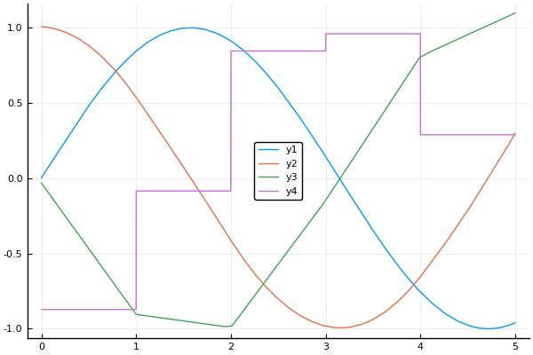

Plotting
This package defines plot recipes for use with Plots.jl.
Plotting a BSplineBasis
A B-spline basis can be plotted by passing it to the Plots.plot function:
basis = BSplineBasis(4, 0:5)
plot(basis)By default, each B-spline is drawn with 100 samples. The number of samples can be changed with an optional argument, i.e., plot(basis, 5) will plot each B-spline with only 5 samples.
Plotting Splines and their derivatives
Splines can be plotted like functions:
basis = BSpline(4, 0:5)
spl = approximate(sin, basis)
plot(1:5, spl) # evaluate spl on the points 1:5 and plot it
plot(spl, 1, 3) # plot spl from 1 to 3
plot(spl) # plot spl from 0 to 5 (its support)To plot a spline together with a Function, it needs to be of a Function type. For this purpose, a Function constructor is provided that wraps a Spline into a Function object.
plot([sin, Function(spl)], 0, 5, label=["exact" "spline approximation"])The Function wrapper can also be used to plot the derivatives of a spline via an optional argument:
f1 = Function(spl)
f2 = Function(spl, Derivative(1))
f3 = Function(spl, Derivative(2))
f4 = Function(spl, Derivative(3))
plot([f1, f2, f3, f4])